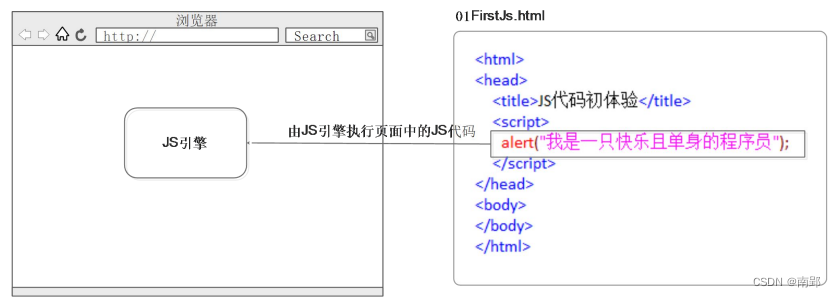
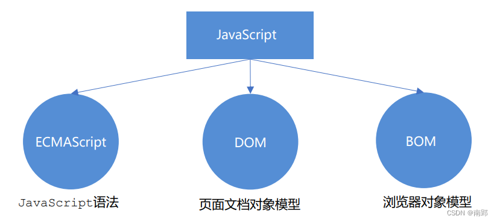
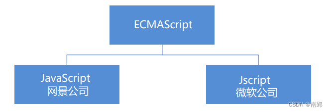
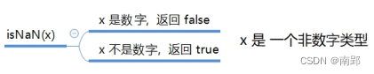
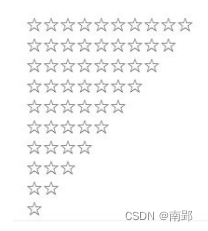

一、JavaScript简介
- JavaScript 是世界上最流行的语言之一，是一种运行在客户端的脚本语言 （Script 是脚本的意思）
- 脚本语言：不需要编译，运行过程中由 js 解释器( js 引擎）逐行来进行解释并执行
- 现在也可以基于 Node.js 技术进行服务器端编程
1. HTML/CSS/JS 的关系
HTML/CSS 标记语言–描述类语言
- HTML 决定网页结构和内容( 决定看到什么 )，相当于人的身体
- CSS 决定网页呈现给用户的模样( 决定好不好看 )， 相当于给人穿衣服、化妆
JS 脚本语言–编程类语言
- 实现业务逻辑和页面控制( 决定功能 )，相当于人的各种动作
2. 浏览器执行JS简介
浏览器分成两部分：渲染引擎和 JS 引擎
- 渲染引擎：用来解析HTML与CSS，俗称内核，比如 chrome 浏览器的 blink ，老版本的 webkit
- JS 引擎：也称为 JS 解释器。 用来读取网页中的JavaScript代码，对其处理后运行，比如 chrome 浏览器的 V8
浏览器本身并不会执行JS代码，而是通过内置 JavaScript 引擎(解释器) 来执行 JS 代码 。JS 引擎执行代码时逐行解释每一句源码（转换为机器语言），然后由计算机去执行，所以 JavaScript 语言归为脚本语言，会逐行解释执行。

3. JS的组成
JavaScript 包括 ECMAScript、DOM、BOM

3.1 ECMAScript
ECMAScript 是由ECMA 国际（ 原欧洲计算机制造商协会）进行标准化的一门编程语言，这种语言在万维网上应用广泛，它往往被称为 JavaScript 或 JScript，但实际上后两者是 ECMAScript 语言的实现和扩展。

ECMAScript：ECMAScript 规定了JS的编程语法和基础核心知识，是所有浏览器厂商共同遵守的一套JS语法工业标准。
更多参看 MDN
3.2 DOM——文档对象模型
文档对象模型（Document Object Model，简称DOM），是W3C组织推荐的处理可扩展标记语言的标准编程接口。 通过 DOM 提供的接口可以对页面上的各种元素进行操作（大小、位置、颜色等）。
3.3 BOM ——浏览器对象模型
浏览器对象模型 (Browser Object Model，简称BOM) ，提供了独立于内容的、可以与浏览器窗口进行互动的对象结构。通过BOM可以操作浏览器窗口，比如弹出框、控制浏览器跳转、获取分辨率等。
4. JS初体验
JS 有3种书写位置，分别为行内、内嵌和外部。
4.1 行内式
<input type="button" value="点我试试" onclink="javascript:alert('Hello World')" />- 可以将单行或少量JS代码写在HTML标签的事件属性中(以on开头的属性)，如： onclink
- 注意单双引号的使用：在HTML中我们推荐使用双引号，JS中我们推荐使用单引号
- 可读性差，在 HTML 中编入 JS 大量代码时，不方便阅读
- 特殊情况下使用
4.2 内嵌式
<script>
alert('Hello World!');
</script>- 可以将多行JS代码写到
<script>标签中 - 内嵌 JS 是学习时常用的方式
4.3 外部式
<script src="my.js"></script>- 利于HTML页面代码结构化，把单独JS代码独立到HTML页面之外，既美观，又方便
- 引用外部JS文件的script标签中间不可以写代码
- 适合于JS代码量比较大的情况
5. 注释
5.1 单行注释
// 单行注释- 快捷键
ctrl + /
5.2 多行注释
/*
多行注释
*/ - vscode中修改快捷键方式：vscode → 首选项按钮→ 键盘快捷方式 → 查找原来的快捷键 → 修改为新的快捷键 → 回车确认
- 快捷键
ctrl + shift + /
二、JavaScript 基本语法
1. 输入输出语句
为了方便信息的输入输出，JS中提供了一些输入输出语句，其常用的语句如下：
| 方法 | 说明 | 归属 |
|---|---|---|
| alert(msg); | 浏览器弹出警示框 | 浏览器 |
| console.log(msg); | 浏览器控制台打印输出信息 | 浏览器 |
| prompt(info); | 浏览看弹出输入框，用户可以输入 | 浏览器 |
注意：
alert()主要用来显示消息给用户console.log()用来给程序员自己看运行时的消息
2. 变量
- 变量是用于存放数据的容器，我们通过变量名获取数据，甚至数据可以修改。
- 本质：变量是程序在内存中申请的一块用来存放数据的空间。
2.1 变量的使用
变量在使用时分为两步： 1. 声明变量 2. 赋值
2.1.1 声明变量
var age;//声明一个名称为age的变量var是一个 JS关键字，用来声明变量( variable 变量的意思 )。使用该关键字声明变量后，计算机会自动为变量分配内存空间，不需要程序员管；age是程序员定义的变量名，我们要通过变量名来访问内存中分配的空间- 同时声明多个变量时，只需要写一个 var， 多个变量名之间使用英文逗号隔开。
var age = 10, name = 'zs', sex = 2;
声明变量特殊情况：
| 情况 | 说明 | 结果 |
|---|---|---|
| var age; console.log(age); | 只声明，不赋值 | undefined |
| console.log(age); | 不声明 不赋值 直接使用 | 报错 |
| age = 10;console.log(age); | 不声明 只赋值 | 10 |
2.1.2 赋值
age = 10;//给 age 这个变量赋值为 10=用来把右边的值赋给左边的变量空间中- 变量值是程序员保存到变量空间里的值
- 一个变量被重新赋值后，它原有的值就会被覆盖，变量值将以最后一次赋的值为准。
2.2 变量的命名规范
- 由字母
(A-Z,a-z)，数字(0-9)，下划线(_)，美元符号($)组成； - 严格区分大小写。
var app;和var App;是两个变量； - 不能以数字开头；
- 不能是关键字，保留字。例如：
var,for,while - 遵循驼峰命名法。首字母小写，后面单词的首字母需要大写。例如：
myFirstName
3. 数据类型
- 变量是用来存储值的所在处，它们有名字和数据类型。变量的数据类型决定了如何将代表这些值的位存储到计算机的内存中。
- JavaScript 是一种弱类型或者说动态语言。这意味着不用提前声明变量的类型，在程序运行过程中，类型会被自动确定。
var age = 10; // 这是一个数字型
var areYouOk = '是的'; // 这是一个字符串- 在代码运行时，变量的数据类型是由 JS引擎 根据 = 右边变量值的数据类型 来判断的，运行完毕之后， 变量就确定了数据类型。
- JavaScript 拥有动态类型，同时也意味着相同的变量可用作不同的类型：
var x = 6; // x 为数字
var x = "Bill"; // x 为字符串3.1 简单数据类型
JS 把数据类型分为两类：
- 简单数据类型（Number,String,Boolean,Undefined,Null）
- 复杂数据类型 （object)
| 简单数据类型 | 说明 | 默认值 |
|---|---|---|
| Number | 数字型，包含整型值和浮点型值，如21，0.21 | 0 |
| Boolean | 布尔值类型，如true、false ，等价于1和0 | false |
| String | 字符串类型，如“张三” | ‘ ‘ |
| Undefined | var a; 声明了变量a但是没有赋值，此时a=undefined | undefined |
| Null | var a = null;声明了变量a为空值 | null |
3.1.1 数字型 Number
JavaScript 数字类型既可以用来保存整数值，也可以保存小数(浮点数）。
1. 数字型进制
最常见的进制有二进制、八进制、十进制、十六进制。
// 1.八进制数字序列范围：0~7
var num1 = 07; // 对应十进制的7
var num2 = 019; // 对应十进制的19
var num3 = 08; // 对应十进制的8
// 2.十六进制数字序列范围：0~9以及A~F
var num = 0xA;现阶段我们只需要记住，在JS中八进制前面加0，十六进制前面加 0x
2. 数字型范围
JavaScript中数值的最大和最小值
alert(Number.MAX_VALUE); // 1.7976931348623157e+308
alert(Number.MIN_VALUE); // 5e-3243. 数字型三个特殊值
alert(Infinity); //Infinity(无穷大)
alert(-Infinity); //-Infinity(无穷小)
alert(NaN); //Not a Number ,代表任何一个非数值4. isNaN

var userAge = 21;
var isOk = isNan(userAge);
console.log(isOk); //false,21不是一个非数字
var userName = "andy";
console.log(isNan(userName)); //true,"andy"是一个非数字
3.1.2 字符串型 String
1. 字符串引号嵌套
JS可以用 单引号嵌套双引号，或者用 双引号嵌套单引号（外双内单，外单内双）
var strMsg ='我是一个“高富帅”' //可以用 '' 包含 ""
var strMsg2 ="我是'高富帅'" //可以用"" 包含 ''2. 字符串转义符
类似HTML里面的特殊字符，字符串中也有特殊字符，我们称之为转义符。
转义符都是 \ 开头的，常用的转义符及其说明如下：
| 转义符 | 解释说明 |
|---|---|
\n |
换行符，n是newline |
\\ |
斜杠\ |
\' |
‘ 单引号 |
\'' |
‘’ 双引号 |
\t |
tab 缩进 |
\b |
空格，b是blank的意思 |
3. 字符串长度
字符串是由若干字符组成的，这些字符的数量就是字符串的长度。通过字符串的 length 属性可以获取整个字符串的长度。
//通过字符串的length属性可以获取整个字符串的长度
var strMsg = "我是高富帅！";
alert(strMsg.length); //显示64. 字符串拼接
- 多个字符串之间可以使用 + 进行拼接，其拼接方式为 字符串 + 任何类型 = 拼接之后的新字符串
- 拼接前会把与字符串相加的任何类型转成字符串，再拼接成一个新的字符串
//1 字符串相加
alert('hello' + ' ' + 'World'); //hello World
//2 数值字符串相加
alert('100' + '100'); //100100
//3 数值字符串+数值
alert('12'+ 12); //1212 自动转换为字符串
//4 数值+数值
alert(12 + 12); //243.1.3 布尔型 Boolean
- 布尔类型有两个值：true 和 false ，其中 true 表示真（对），而 false 表示假（错）。
- 布尔型和数字型相加的时候， true 的值为 1 ，false 的值为 0。
var flag = true;
console.log(flag + 1); // 2 true当加法来看当1来看，flase当0来看3.1.4 未定义 undefined
- 一个声明后没有被赋值的变量会有一个默认值 undefined ( 如果进行相连或者相加时，注意结果）
// 如果一个变量声明未赋值，就是undefined 未定义数据类型
var str;
console.log(str); //undefined
var variable = undefined;
console.log(variable + 'Pink'); //undefinedPink
console.log(variable + 18); //NaN - undefined 和 字符串 相加，会拼接字符串
- undefined 和 数字相加，最后结果是NaN
3.1.5 空值 null
- 一个声明变量给 null 值，里面存的值为空
var space = null;
console.log(space + 'pink'); //nullpink
console.llog(space + 1); // 1 3.2 获取变量的数据类型
typeof可用来获取检测变量的数据类型
var num = 18;
console.log(typeof num) // 结果 number | 类型 | 例 | 结果 |
|---|---|---|
| string | typeof “小白” | “string” |
| number | typeof 18 | “number” |
| boolean | typeof true | “boolean” |
| undefined | typeof undefined | “undefined” |
| null | typeof null | “object” |
3.3 数据类型转换
使用表单、prompt 获取过来的数据默认是字符串类型的，此时就不能直接简单的进行加法运算，而需要转换变量的数据类型。通俗来说，就是把一种数据类型的变量转换成另外一种数据类型。
我们通常会实现3种方式的转换：
- 转换为字符串类型
- 转换为数字型
- 转换为布尔型
3.3.1 转换为字符串型
| 方式 | 说明 | 案例 |
|---|---|---|
| toString() | 转成字符串 | var num = 1; alert(num.toString()); |
| String()强制转换 | 转成字符串 | var num = 1; alert(String(num)); |
| 加号拼接字符串 | 和字符串拼接的结果都是字符串 | var num =1; alert(num+’我是字符串’); |
- toString() 和 String() 使用方式不一样
- 三种转换方式，我们更喜欢用第三种加号拼接字符串转换方式，这一方式也称为隐式转换
3.3.2 转换为数字型（重点）
| 方式 | 说明 | 案例 |
|---|---|---|
| parseInt(string)函数 | 将string类型转成整数数值型 | parseInt(‘78’) |
| parseFloat(string)函数 | 将string类型转成浮点数数值型 | parseFloat(‘78.21’) |
| Number()强制转换函数 | 将string类型转换为数值型 | Number(‘12’) |
| js 隐式转换(- * /) | 利用算术运算隐式转换为数值型 | ‘12’-0 |
// 1.parseInt()
var age =prompt('请输入您的年龄');
consolo.log(parseInt(age)); //数字型18
consolo.log(parseInt('3.14')); //3取整
consolo.log(parseInt('3.94')); //3,不会四舍五入
consolo.log(parseInt('120px')); //120,会去掉单位
// 2.parseFloat()
console.log(parseFloat('3.14')); //3.14
consolo.log(parseFloat('120px')); //120,会去掉单位
// 3.利用Number(变量)
var str ='123';
console.log(Number(str));
console.log(Number('12'));
// 4.利用了算术运算 - * / 隐式转换
console.log('12'-0); // 12
console.log('123' - '120'); //3
console.log('123' * 1); // 123- 注意 parseInt 和 parseFloat ，这两个是重点
- 隐式转换是我们在进行算数运算的时候，JS自动转换了数据类型
3.3.3 转换为布尔型
| 方法 | 说明 | 案例 |
|---|---|---|
| Boolean()函数 | 其他类型转成布尔值 | Boolean(‘true’); |
- 代表空、否定的值会被转换为false，如 ‘ ‘ , 0, NaN , null , undefined
- 其余的值都会被被转换为true
4. 运算符
运算符（operator）也被称为操作符，是用于实现赋值、比较和执行算数运算等功能的符号
JavaScript 中常用的运算符有：
- 算数运算符
- 递增和递减运算符
- 比较运算符
- 逻辑运算符
- 赋值运算符
4.1 算术运算符
概念：算术运算使用的符号，用于执行两个变量或值的算术运算。
| 运算符 | 描述 | 实例 |
|---|---|---|
| + | 加 | 10 + 20 =30 |
| - | 减 | 10 - 20 =-10 |
| * | 乘 | 10 * 20 =200 |
| / | 除 | 10 / 20 =0.5 |
| % | 取余数（取模） | 返回出发的余数 9 % 2 =1 |
- 浮点数值的最高精度是17位小数，但在进行算数计算时其精确度远远不如整数
- 所以不要直接判断两个浮点数是否相等
var result = 0.1 +0.2; //结果不是0.3，0.30000000000000004 console.log(0.07 * 100); //结果不是7，而是7.000000000000001
4.2 递增和递减运算符
递增（++）
递减（- -）
放在变量前面时，我们称为前置递增(递减)运算符
放在变量后面时，我们称为后置递增(递减)运算符
注意：递增和递减运算符必须和变量配合使用。
4.2.1 前置递增运算符
++num：前置递增，就是自加1
使用口诀:先自加，后返回值
var num = 10;
alert (++num + 10); // 214.2.2 后置递增运算符
num ++：后置递增，就是自加1
使用口诀:先返回原值，后自加
var num = 10;
alert(10 + num++); // 20小结：
- 单独使用时，运行结果相同，与其他代码联用时，执行结果会不同
- 后置：先原值运算，后自加（先人后己）
- 前置：先自加，后运算（先已后人）
- 开发时，大多使用后置递增/减，并且代码独占一行
4.3 比较运算符
比较运算符是两个数据进行比较时所使用的运算符，比较运算后，会返回一个布尔值(true / false)作为比较运算的结果。
| 运算符名称 | 说明 | 案例 | 结果 |
|---|---|---|---|
| < | 小于号 | 1 < 2 | true |
| > | 大于号 | 1 > 2 | false |
| >= | 大于等于号(大于或者等于) | 2 >= 2 | true |
| <= | 小于等于号(小于或者等于) | 3 <= 2 | false |
| == | 判等号(会转型) | 37 == 37 | true |
| != | 不等号 | 37 != 37 | false |
=== !== |
全等 要求值和数据类型都一致 | 37 === ‘37’ | false |
- 含有
=的（除===!==）会对变量进行隐式转换为数字型
4.4 逻辑运算符
逻辑运算符是用来进行布尔值运算的运算符，其返回值也是布尔值。
| 逻辑运算符 | 说明 | 案例 |
|---|---|---|
&& |
“逻辑与”，简称”与”and | true && false |
| ` | ` | |
! |
“逻辑非”，简称”非”not | ！true |
- 逻辑与：两边都是 true才返回 true，否则返回 false
- 逻辑或：两边都为 false 才返回 false，否则都为true
- 逻辑非：逻辑非（!）也叫作取反符，用来取一个布尔值相反的值，如 true 的相反值是 false
4.4.1 短路运算(逻辑中断)
原理：当有多个表达式（值）时,左边的表达式值可以确定结果时,就不再继续运算右边的表达式的值
注意：正常情况下，是布尔值参与逻辑运算。当值或表达式参与逻辑运算时，出现逻辑中断。
1. 逻辑与
- 语法：表达式1 && 表达式2
- 如果第一个表达式的值为真，则返回表达式2
- 如果第一个表达式的值为假，则返回表达式1
console.log(123 && 456); //456
console.log(0 && 456); //0
console.log(123 && 456 && 789); //7892. 逻辑或
- 语法：表达式1 || 表达式2
- 如果第一个表达式的值为真，则返回表达式1
- 如果第一个表达式的值为假，则返回表达式2
console.log(123 || 456); // 123
console.log(123 || 456 || 456 + 123); // 123
console.log(0 || 456 || 456 + 123); // 456
// 逻辑中断很重要 它会影响我们程序运行结果
var num = 0;
console.log(123 || num++);//123
console.log(num); // 0 num++未执行4.5 赋值运算符
概念：用来把数据赋值给变量的运算符。
| 赋值运算符 | 说明 | 案例 |
|---|---|---|
= |
直接赋值 | var usrName = ‘我是值’ |
+= ，-= |
加、减一个数后再赋值 | var age = 10； age+=5；//15 |
*=，/=，%= |
乘、除、取模后再赋值 | varage = 2; age*=5; //10 |
4.6 运算符优先级
| 优先级 | 运算符 | 顺序 |
|---|---|---|
| 1 | 小括号 | () |
| 2 | 一元运算符 | ++ – ！ |
| 3 | 算数运算符 | 先 * / 后 + - |
| 4 | 关系运算符 | >, >= , < , <= |
| 5 | 相等运算符 | == ，!=，=== ，!== |
| 6 | 逻辑运算符 | 先与后或 |
| 7 | 赋值运算符 | = |
| 8 | 逗号运算符 | ， |
| 1.一元运算符里面的逻辑非优先级很高 | ||
| 2.逻辑与 比 逻辑或 优先级高 |
console.log( 4 >= 6 || '人' != '阿凡达' && !(12 * 2 == 144) && true) // true
var a = 3 > 5 && 2 < 7 && 3 == 4;
console.log(a); //false
var b = 3 <= 4 || 3 > 1 || 3 != 2;
console.log(b); //true
var c = 2 === "2";
console.log(c); //false
var d = !c || b && a ;
console.log(d); //true
5. 流程控制
流程控制主要有三种结构，分别是顺序结构、分支结构和循环结构，这三种结构代表三种代码执行的顺序
5.0 断点调试
- 浏览器中按 F12–> sources –>找到需要调试的文件–>在程序的某一行设置断点(在行数点一下)
- 刷新浏览器
- Watch: 监视，通过watch可以监视变量的值的变化，非常的常用
- F11: 程序单步执行，让程序一行一行的执行，这个时候，观察watch中变量的值的变化
5.1 分支结构
JS 语言提供了两种分支结构语句：
- if 语句
- switch 语句
5.1.1 if 语句
1. if 语句
// 条件成立执行代码，否则什么也不做
if (条件表达式) {
//条件成立执行的代码语句
}2. if else 语句
// 条件成立，执行if里面代码，否则执行else里面的代码
if(条件表达式) {
//[如果]条件成立执行的代码
}
else {
//[否则]执行的代码
}案例：判断闰年
接收用户输入的年份，如果是闰年就弹出闰年，否则弹出是平年
算法：能被4整除且不能整除100的为闰年（如2004年就是闰年，1901年不是闰年）或者能够被 400 整除的就是闰年
var year = prompt('请输入年份');
if (year % 4 == 0 && year % 100 !=0 || year % 400 ==0) {
alert('这个年份是闰年');
}
else {
alert('这个年份是平年');
}3. if else if 语句
if(条件表达式1) {
语句1;
}
else if(条件表达式2) {
语句2;
}
else if(条件表达式3) {
语句3;
}
else {
//上述条件都不成立执行此处代码
}案例:接收用户输入的分数，根据分数输出对应的等级字母 A、B、C、D、E
其中：
90分(含)以上 ，输出：A
80分(含)~ 90 分(不含)，输出：B
70分(含)~ 80 分(不含)，输出：C
60分(含)~ 70 分(不含)，输出：D
60分(不含) 以下，输出： E
var score = prompt('请您输入分数:');
if (score >= 90) {
alert('宝贝，你是我的骄傲');
} else if (score >= 80) {
alert('宝贝，你已经很出色了');
} else if (score >= 70) {
alert('你要继续加油喽');
} else if (score >= 60) {
alert('孩子，你很危险');
} else {
alert('可以再努力点吗，你很棒，但还不够棒');
}5.1.2 三元表达式
如果表达式1为 true ，则返回表达式2的值；如果表达式1为 false，则返回表达式3的值
表达式1 ? 表达式2 : 表达式3;- 常用于比较几个数的大小
案例：数字补0
用户输入数字，如果数字小于10，则在前面补0，比如01，09
如果数字大于10，则不需要补，比如20
var num = prompt('请输入0~59之间的一个数字');
var result = num < 10 ? '0' + num : num
alert(result);5.1.3 switch 语句
switch 语句也是多分支语句，它用于基于不同的条件来执行不同的代码。当要针对变量设置一系列特定值的选项时，就可以使用 switch。
switch(表达式){
case value1:
//表达式等于 value1 时要执行的代码
break;
case value2:
//表达式等于value2 时要执行的代码
break;
default:
//表达式不等于任何一个value时要执行的代码
}- 关键字 switch 后面括号内可以是表达式或值， 通常是一个变量
- 关键字 case , 后跟一个选项的表达式或值，后面跟一个冒号
- switch 表达式的值会与结构中的 case 的值做比较
- 如果存在匹配全等(
===) ，则与该 case 关联的代码块会被执行，并在遇到 break 时停止，整个 switch 语句代码执行结束 - 如果所有的 case 的值都和表达式的值不匹配，则执行 default 里的代码
- 执行case 里面的语句时，如果没有break，则继续执行下一个case里面的语句
// 用户在弹出框里面输入一个水果，如果有就弹出该水果的价格， 如果没有该水果就弹出“没有此水果”
var fruit = prompt('请您输入查询的苹果');
switch (fruit) {
case '苹果':
alert('苹果的价格为3.5元/千克');
break;
case '香蕉':
alert('香蕉的价格为3元/千克');
break;
default:
alert('没有这种水果');
}switch 语句和 if else if 语句的区别：
- 一般情况下，它们两个语句可以相互替换
- switch…case 语句通常处理 case为比较确定值的情况， 而 if…else…语句更加灵活，常用于范围判断(大于、等于某个范围)
- switch 语句进行条件判断后直接执行到程序的条件语句，效率更高。而if…else 语句有几种条件，就得判断多少次。
- 当分支比较少时，if… else语句的执行效率比 switch语句高。
- 当分支比较多时，switch语句的执行效率比较高，而且结构更清晰。
5.2 循环结构
在Js 中，主要有三种类型的循环语句：
- for 循环
- while 循环
- do…while 循环
5.2.1 for 循环
for 循环主要用于把某些代码循环若干次，通常跟计数有关系。其语法结构如下：
for(初始化变量;条件表达式;操作表达式) {
//循环体
}执行过程：
- 初始化变量，初始化操作在整个 for 循环只会执行一次。
- 执行条件表达式，如果为true，则执行循环体语句，否则退出循环，循环结束。
- 执行操作表达式，此时第一轮结束。
- 第二轮开始，直接去执行条件表达式（不再初始化变量），如果为 true ，则去执行循环体语句，否则退出循环。
- 继续执行操作表达式，第二轮结束。
- 后续跟第二轮一致，直至条件表达式为假，结束整个 for 循环。
案例：
1. 要求用户输入班级人数，之后依次输入每个学生的成绩，最后打印出该班级总的成绩以及平均成绩。
var num = prompt('请输入班级总的人数:'); // num 班级总的人数
var sum = 0; // 总成绩
var average = 0; // 平均成绩
for (var i = 1; i <= num; i++) {
var score = prompt('请输入第' + i + '个学生的成绩');
//这里接收的是str，必须转换为数值
sum = sum + parseFloat(score);
}
average = sum / num;
alert('班级总的成绩是：' + sum);
alert('班级总的平均成绩是：' + average);2. 一行打印五颗星星
var star = '';
for (var i = 1; i <= 5; i++) {
star += '☆';
}
console.log(star);5.2.2 双重 for 循环
循环嵌套是指在一个循环语句中再定义一个循环语句的语法结构，例如在for循环语句中，可以再嵌套一个for 循环，这样的 for 循环语句我们称之为双重for循环。
for(外循环的初始;外循环的条件;外形循环的操作表达式){
for(内循环的初始;内循环的条件;内循环的操作表达式){
需执行的代码;
}
}- 内层循环可以看做外层循环的语句
- 内层循环执行的顺序也要遵循 for 循环的执行顺序
- 外层循环执行一次，内层循环要执行全部次数
案例：
1. 打印五行五列星星
核心：
- 内层循环负责一行打印五个星星
- 外层循环负责打印五行
var star = '';
for(var j = 1;j<=5;j++)
{
for (var i = 1; i <= 5; i++)
{
star += '☆'
}
//每次满5个星星就加一次换行
star +='\n'
}
console.log(star);2. 打印倒三角形

- 一共有10行，但是每行的星星个数不一样，因此需要用到双重 for 循环
- 外层的 for 控制行数 i ，循环10次可以打印10行
- 内层的 for 控制每行的星星个数 j
- 核心算法： 每一行星星的个数： j = i ; j <= 10; j++
- 每行打印完毕后，都需要重新换一行
var star = '';
for (var i = 1; i <= 10; i++) {
for (var j = i; j <= 10; j++) {
star += '☆';
}
star += '\n';
}
console.log(star);3. 打印九九乘法表
- 一共有9行，但是每行的个数不一样，因此需要用到双重 for 循环
- 外层的 for 循环控制行数 i ，循环9次 ，可以打印 9 行
- 内层的 for 循环控制每行公式 j
- 核心算法：每一行 公式的个数正好和行数一致， j <= i;
- 每行打印完毕，都需要重新换一行
- 把公式用 i 和 j 替换
var str = '';
for (var i = 1; i <= 9; i++) { // 外层for控制 行数 9行
for (var j = 1; j <= i; j++) { // j 控制列数 列数和行数是一样的 j <= i
str += j + " × " + i + " = " + i * j + '\t';
}
str += '\n';
}
console.log(str);5.2.3 while 循环
while 语句可以在条件表达式为真的前提下，循环执行指定的一段代码，直到表达式不为真时结束循环。
while(条件表达式){
//循环体代码
}执行过程：
- 先执行条件表达式，如果结果为 true，则执行循环体代码；如果为 false，则退出循环，执行后面代码
- 执行循环体代码
- 循环体代码执行完毕后，程序会继续判断执行条件表达式，如条件仍为true，则会继续执行循环体，直到循环条件为 false 时，整个循环过程才会结束
注意：
- 使用 while 循环时一定要注意，它必须要有退出条件，否则会称为死循环
- while 循环和 for 循环的不同之处在于 while 循环可以做较为复杂的条件判断，比如判断用户名和密码
案例：
弹出一个提示框， 你爱我吗？ 如果输入我爱你，就提示结束，否则，一直询问。
var str = prompt('你爱我吗');
while (str !== '我爱你') {
str = prompt('你爱我吗');
}
alert('结束');5.2.4 do while 循环
do… while 语句其实是 while 语句的一个变体。该循环会先执行一次代码块，然后对条件表达式进行判断，如果条件为真，就会重复执行循环体，否则退出循环。
do {
//循环体代码-条件表达式为true的时候重复执行循环一代码
} while(条件表达式);执行过程：
- 先执行一次循环体代码
- 再执行表达式，如果结果为true，则继续执行循环体代码，如果为false，则退出循环，继续执行后面的代码
注意：
- 先执行再判断循环体，所以 do… while 循环语句至少会执行一次循环体代码
案例：
弹出一个提示框， 你爱我吗？ 如果输入我爱你，就提示结束，否则，一直询问。
do {
var str = prompt('你爱我吗？');
} while (str !== '我爱你');
alert('结束');==循环小结：==
- 三个循环很多情况下都可以相互替代使用
- 如果是用来计次数，跟数字相关的，三者使用基本相同，但是我们更喜欢用 for
- while 和 do…while 可以做更复杂的判断条件，比 for 循环灵活一些
- 实际工作中，我们更常用for 循环语句，它写法更简洁直观， 所以这个要重点学习
5.2.5 continue 和 break
continue关键字用于立即跳出本次循环，继续下一次循环（本次循环体中 continue 之后的代码就会少执行一次）。
例如，吃5个包子，第3个有虫子，就扔掉第3个，继续吃第4个第5个包子
for (var i = 1; i <= 5; i++) {
if (i == 3) {
console.log('这个包子有虫子，扔掉');
continue; // 跳出本次循环，跳出的是第3次循环
}
console.log('我正在吃第' + i + '个包子呢');
}break关键字用于立即跳出整个循环
例如，吃5个包子，吃到第3个发现里面有半个虫子，其余的也不吃了
for (var i = 1; i <= 5; i++) {
if (i == 3) {
break; // 直接退出整个for 循环，跳到整个for下面的语句
}
console.log('我正在吃第' + i + '个包子呢');
}5.2.6 循环作业
1.打印出正金字塔 （1357）
for (var i = 1; i <= 4; i++) {
for (var k = 1; k <= 4 - i; k++) {
document.write(' ');
}
for (j = 1; j <= 2 * i - 1; j++) {
document.write('☆');
}
document.write('<br/>');
}2.打印出倒金字塔 （7531）
for (var i = 4; i >= 1; i--) {
for (var k = 1; k <= 4 - i; k++) {
document.write(' ');
}
for (j = 1; j <= 2 * i - 1; j++) {
document.write('☆');
}
document.write('<br/>');
}3. 穷举：从1遍历到无穷大，找出符合条件的
需求 ：有一群人，如果3个人站一排多出一人；如果4个人站一排多出来2个人；如果5人一排多出3人。
请问：这群人的数量
var i = 1;
while (i <= Infinity) {
if (i % 3 == 1 && i % 4 == 2 && i % 5 == 3) {
alert(i);
break;
}
i++;
}4. 简易ATM
var money = 100;
var num = prompt('请输入您要的操作：\n1.存钱\n2.取钱\n3.显示余额\n4.退出');
//该处添加while是为了在进行一个操作（如存钱）后，可以继续执行其他操作
while (money >= 0) {
if (num == '1') {
var msg = prompt('请输入需要存的金额');
msg = parseInt(msg);
money = money + msg;
alert('余额' + money);
}
if (num == '2') {
var msg = prompt('请输入需要取的金额');
msg = parseInt(msg);
money = money - msg;
alert('余额' + money);
}
if (num == '3') {
alert('余额' + money);
}
if (num == '4') {
// num = false;
break;
}
num = prompt('操作:\n1.存钱\n2.取钱\n3.显示余额\n4.退出');
}